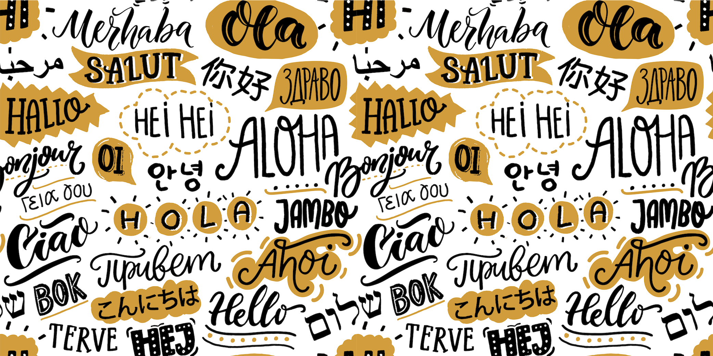

About
Hi, stranger! Welcome to my page of secrets. I am a language explorer most of my life and so are you as a mere difference of proficiency. As a linguist on the trend, my current research interests are to incorporate linguistics into computer science or vice versa. I am currently working on NLP, speech synthesis and automatic speech recognition, before which I was more devoted to syntactic theories. Questions that I always probe into are how probabilistic syntax parser benefits the development of sysntax, how to assign semantic information to parses. "More linguistically", I am also quite interested in A(')-movement and islands in Mandarin, and Korean.
[My CV]
Brief Bio
MSc. in Speech and Language Processing, University of Edinburgh
2013 - 2018
BA in English Language and Literature, Hanyang University
2020 - 2022
BA in Translation and Interpretation, Zhejiang Normal Univeristy
2018 - 2020
What can I do?
I can do what my majors taught me and demanded me to explore. Besides, I am a quite boring person, which means I stay sedentary most of time learning new langauges and practicing caligraphy.
- Programming (Python,Pytorch,Latex,Praat,R,Html,SQlite)
- Languages (Mandarin, Chinese southern dialects, English, Korean, Japanese, French, Latin)
- Syntax,Morphosyntax,Semantics,interfaces
- Automatic Speech recognition
- Calligraphy
Projects
Below introduces several projects related to language technology I have done during past few years.
Evaluate primitive TTS system Festival
Based on what TTS systems at different stages (both front end and back end), I inspected the performance of Festival tts system and found different types of errors such as mis-taggings, rule-missing, abrupt concatenation etc. I also put forward feasible solutions.
Diphone based synthesizer
I designed a diphone synthesizer based on an existing diphone database. It is able to 'speak' in a non-prosodic way

Automatic digit recogniser (5-state)
This project aimed to create a speaker-independent digit recogniser(1-10) and evaluate its performance under different conditions. This system takes MFCC as features and implements a HMM to model audio information with each one containing a GMM. By controlling different factors like speakers' sex, recording devices, and accents, I had several findings including factors influencing ASR accuracy and the potential NLP biases existing in ASR system.

Old language model experiment (3-gram model)
In this project, I created a tri-character model based on a corpus. It is able to generate the third character based on the previous two characters.
MaxEnt Model implemented for BIO tagging
BIO tagging is shown to be useful in information extraction (query) of dialogue system. To deal with that, I employed multinomial logistic regression model with different input features (i.e., word embeddings, dependency). I also investigated what kind of features did well in this classification task.
Conferences and Workshops
North East Syntax Seminar (Edinburgh)
2022
Summer School in Languages and Linguistics, Leiden University
2021
32nd European Summer School in Logic, Language and Information
2021
Eastern Generative Grammar Summer School
2021
The 29th Japanese/Korean Linguistics Conference
2021
Ongoing Research
Syntactic-semantic cooperative binding in Mandarin and Korean, a comparative study
Exploring syntactic phenomenoa that fit tolerant principle
Incorporating discourse information in TTS system
Grants
Scholarship for Excellent International Students, Hanyang University
2020-2022
TOPIK Scholarship, Hanyang University
2020
Hanyang International Scholarship Program (HISP), Hanyang University
2020
The Second Prize Scholarship, Zhejiang Normal University
2018-2019, 2019-2020
The 29th Japanese/Korean Linguistics Conference
2021
Honors
Outstanding Graduate (졸업우수상), Hanyang Univeristy
2022
Outstanding Student Cadre, Zhejiang Normal University
2018-2019, 2019-2020
The Fifth “LSCAT” Translation Competition(E-C), 2nd Prize
2020
The 27th English Drama Competition, 2nd Prize, Zhejiang Normal University
2019
The 1st English Calligraphy Competition, 2nd Prize, Zhejiang Normal University
2019
The Fourth “LSCAT” Translation Competition(E-C), 3rd Prize
2019